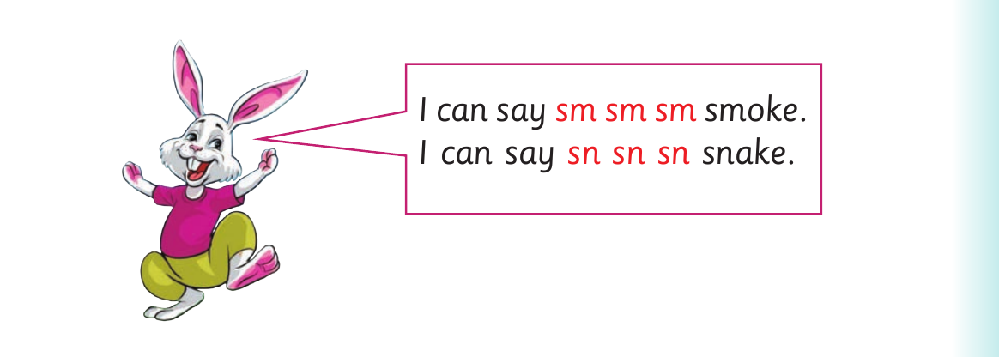
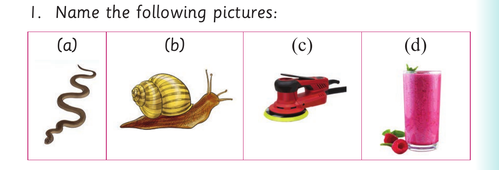

I read words with sm and sn consonants
I read words with sm and sn consonants.

I can say or sign sm sm sm smoke. I can say or sign sn sn sn snake.
Activity 1
1. Name the following pictures:

(a), a picture of a snake. (b), a picture of a snail. (c), a picture of a sanding machine. (d), a picture of a smoothie.
2. Read aloud or sign the following words:
| smoke | smile | smart | smith | smoothie |
|---|---|---|---|---|
| smelt | smear | smash | smoother | smack |
| snail | snatch | snow | snake | sniper |
| sniff | snap | sneak | sneeze | snarl |